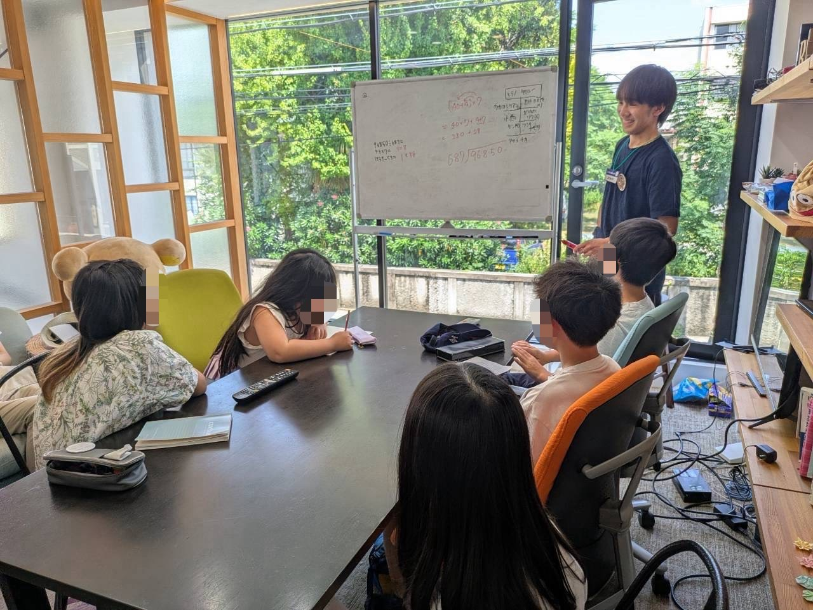

01
About

京都大学理学部数理科学系３回の平野毅朗と申します。
コミュニティにおける帰属意識の醸成や交流の活性化、大学機関の存在意義や教育のあり方について関心があり、 BoCSでの活動を通して勉強と実践を繰り返しています。
- Affiliation京都大学理学部 数理科学系 3回
- Role一般社団法人BoCS 代表理事
- Based in京都
- Interestコミュニティ・大学教育
02
Interests
人が「ここにいていい」と思えるコミュニティをどうつくるか、そしてその先で大学教育がどんな役割を果たせるかに関心があります。 BoCSでの出前授業や学習会を通じて高校生・中学生と直接関わりながら、彼らが学問と出会うきっかけづくりと、 居場所としてのコミュニティのあり方を、実践の中で模索しています。
03
Project
出前授業プログラム / パイロット校 募集中
UnBoCS
高校生が「何を学びたいか」を見つけられるよう、専門分野を持つ京大生が伴走する出前授業プログラムです。 学校・自治体の教育担当部署の方、高校生の方に向けて、企画の内容と連携についてまとめています。
プログラムを見る →
04
Contact
お気軽にご連絡ください。